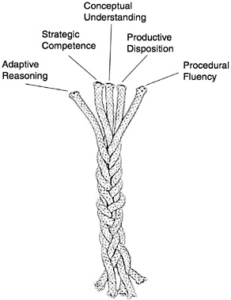
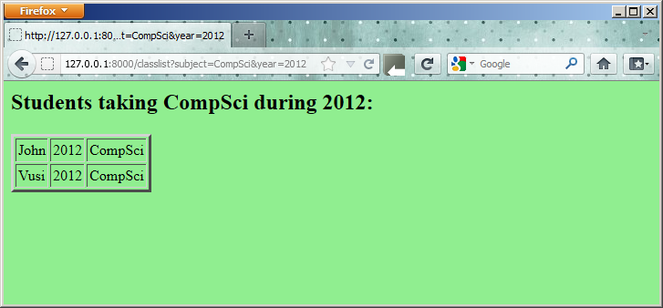

An odds-and-ends Workbook¶
This workbook / cookbook of recipes is still very much under construction.
The Five Strands of Proficiency¶
This was an important study commissioned by the President in the USA. It looked at what was needed for students to become proficient in maths.
But it is also an amazingly accurate fit for what we need for proficiency in Computer Science, or even for proficiency in playing Jazz!
- Procedural Fluency: Learn the syntax. Learn to type. Learn your way around your tools. Learn and practice your scales. Learn to rearrange formulae.
- Conceptual Understanding: Understand why the bits fit together like they do.
- Strategic Competence: Can you see what to do next? Can you formulate this word problem into your notation? Can you take the music where you want it to go?
- Adaptive Reasoning: Can you see how to change what you’ve learned for this new problem?
- A Productive Disposition: We need that Can Do! attitude!
- You habitually think it is worthwhile studying this stuff.
- You are diligent and disciplined enough to grind through the tough stuff, and to put in your practice hours.
- You develop a sense of efficacy — that you can make things happen!
Check out http://mason.gmu.edu/~jsuh4/teaching/strands.htm, or Kilpatrick’s book at http://www.nap.edu/openbook.php?isbn=0309069955
Sending Email¶
Sometimes it is fun to do powerful things with Python — remember that part of the “productive disposition” we saw under the five threads of proficiency included efficacy — the sense of being able to accomplish something useful. Here is a Python example of how you can send email to someone.
1 2 3 4 5 6 7 8 9 10 11 12 13 14 15 16 17 18 19 20 21 22 23 24 25 26 27 28 | import smtplib, email.mime.text
me = "joe@my.org.com" # Put your own email here
fred = "fred@his.org.com" # And fred's email address here
your_mail_server = "mail.my.org.com" # Ask your system administrator
# Create a text message containing the body of the email.
# You could read this from a file, of course.
msg = email.mime.text.MIMEText("""Hey Fred,
I'm having a party, please come at 8pm.
Bring a plate of snacks and your own drinks.
Joe""" )
msg["From"] = me # Add headers to the message object
msg["To"] = fred
msg["Subject"] = "Party on Saturday 23rd"
# Create a connection to your mail server
svr = smtplib.SMTP(your_mail_server)
response = svr.sendmail(me, fred, msg.as_string()) # Send message
if response != {}:
print("Sending failed for ", response)
else:
print("Message sent.")
svr.quit() # Close the connection
|
In the context of the course, notice how we use the two objects in this program: we create a message object on line 9, and set some attributes at lines 16-18. We then create a connection object at line 21, and ask it to send our message.
Write your own Web Server¶
Python is gaining in popularity as a tool for writing web applications. Although one will probably use Python to process requests behind a web server like Apache, there are powerful libraries which allow you to write your own stand-alone web server in a couple of lines. This simpler approach means that you can have a test web server running on your own desktop machine in a couple of minutes, without having to install any extra software.
In this cookbook example we use the wsgi (“wizz-gee”) protocol: a modern way
of connecting web servers to code that runs to provide the services.
See http://en.wikipedia.org/wiki/Web_Server_Gateway_Interface for more on wsgi.
1 2 3 4 5 6 7 8 9 10 11 12 13 14 15 16 | from codecs import latin_1_encode
from wsgiref.simple_server import make_server
def my_handler(environ, start_response):
path_info = environ.get("PATH_INFO", None)
query_string = environ.get("QUERY_STRING", None)
response_body = "You asked for {0} with query {1}".format(
path_info, query_string)
response_headers = [("Content-Type", "text/plain"),
("Content-Length", str(len(response_body)))]
start_response("200 OK", response_headers)
response = latin_1_encode(response_body)[0]
return [response]
httpd = make_server("127.0.0.1", 8000, my_handler)
httpd.serve_forever() # Start the server listening for requests
|
When you run this, your machine will listen on port 8000 for requests. (You may have to tell your firewall software to be kind to your new application!)
In a web browser, navigate to http://127.0.0.1:8000/catalogue?category=guitars. Your browser should get the response
You asked for /catalogue with query category=guitars
Your web server will keep running until you interrupt it (Ctrl+F2 if you are using PyScripter).
The important lines 15 and 16 create a web server on the local machine,
listening at port 8000. Each incoming html request causes the server to
call my_handler which processes the request and returns the appropriate
response.
We modify the above example below: my_handler now
interrogates the path_info, and calls specialist functions to deal with
each different kind of incoming request.
(We say that my_handler dispatches the request to
the appropriate function.) We can easily add other more request cases:
1 2 3 4 5 6 7 8 9 10 11 12 13 14 15 16 17 18 19 20 21 22 23 24 25 26 27 28 29 30 | import time
def my_handler(environ, start_response):
path_info = environ.get("PATH_INFO", None)
if path_info == "/gettime":
response_body = gettime(environ, start_response)
elif path_info == "/classlist":
response_body = classlist(environ, start_response)
else:
response_body = ""
start_response("404 Not Found", [("Content-Type", "text/plain")])
response = latin_1_encode(response_body)[0]
return [response]
def gettime(env, resp):
html_template = """<html>
<body bgcolor='lightblue'>
<h2>The time on the server is {0}</h2>
<body>
</html>
"""
response_body = html_template.format(time.ctime())
response_headers = [("Content-Type", "text/html"),
("Content-Length", str(len(response_body)))]
resp("200 OK", response_headers)
return response_body
def classlist(env, resp):
return # Will be written in the next section!
|
Notice how gettime returns an (admittedly simple) html document which is
built on the fly by using format to substitute content into a
predefined template.
Using a Database¶
Python has a library for using the popular and lightweight sqlite database. Learn more about this self-contained, embeddable, zero-configuration SQL database engine at http://www.sqlite.org.
Firstly, we have a script that creates a new database, creates a table, and stores some rows of test data into the table: (Copy and paste this code into your Python system.)
1 2 3 4 5 6 7 8 9 10 11 12 13 14 15 16 17 18 19 20 21 22 23 24 25 26 27 28 29 30 31 32 33 34 | import sqlite3
# Attach to (or create) the database
connection = sqlite3.connect("c:\studentRecords.db")
# Create a new table with three fields
cursor = connection.cursor()
cursor.execute("""CREATE TABLE StudentSubjects
(studentName text, year integer, subject text)""")
print("Database table StudentSubjects has been created.")
# Create some testdata, and write rows to the table.
test_data = [
("John", 2012, ["CompSci", "Physics"]),
("Vusi", 2012, ["Maths", "CompSci", "Stats"]),
("Jess", 2011, ["CompSci", "Accounting", "Economics", "Management"]),
("Sarah", 2011, ["InfSys", "Accounting", "Economics", "CommLaw"]),
("Zuki", 2012, ["Sociology", "Economics", "Law", "Stats", "Music"])]
for (student, yr, subjects) in test_data:
for subj in subjects:
t = (student, yr, subj)
cursor.execute("INSERT INTO StudentSubjects VALUES (?,?,?)", t)
connection.commit()
# Now verify that we did write the data
cursor.execute("SELECT COUNT(*) FROM StudentSubjects")
result = cursor.fetchall()
numrecs = result[0][0]
cursor.close()
print("StudentSubjects table now has {0} rows of data.".format(numrecs))
|
We get this output:
Database table StudentSubjects has been created.
StudentSubjects table now has 18 rows of data.
Our next recipe adds to our web browser from the previous section. We’ll
allow a query like classlist?subject=CompSci&year=2012 and show how
our server can extract the arguments from the query string, query the database,
and send the rows back to the browser as a formatted table within an html page. We’ll start
with two new imports to get access to sqlite3 and cgi, a library which
helps us parse forms and query strings that are sent to the server:
1 2 | import sqlite3
import cgi
|
Now we replace the stub function classlist with a handler that can do what we need:
1 2 3 4 5 6 7 8 9 10 11 12 13 14 15 16 17 18 19 20 21 22 23 24 25 26 27 28 29 30 31 32 33 34 35 | classlistTemplate = """<html>
<body bgcolor='lightgreen'>
<h2>Students taking {0} during {1}:</h2>
<table border=3 cellspacing=2 cellpadding=2>
{2}
</table>
<body>
</html>
"""
def classlist(env, resp):
# Parse the field value from the query string (or from a submitted form)
# In a real server you'd want to check thay they were present!
the_fields = cgi.FieldStorage(environ = env)
subj = the_fields["subject"].value
year = the_fields["year"].value
# Attach to the database, build a query, fetch the rows.
connection = sqlite3.connect("c:\studentRecords.db")
cursor = connection.cursor()
cursor.execute("SELECT * FROM StudentSubjects WHERE subject=? AND year=?",
(subj, year))
result = cursor.fetchall()
# Build the html rows for the table
table_rows = ""
for (sn, yr, subj) in result:
table_rows += " <tr><td>{0}<td>{1}<td>{2}\n". format(sn, yr, subj)
# Now plug the headings and data into the template, and complete the response
response_body = classlistTemplate.format(subj, year, table_rows)
response_headers = [("Content-Type", "text/html"),
("Content-Length", str(len(response_body)))]
resp("200 OK", response_headers)
return response_body
|
When we run this and navigate to http://127.0.0.1:8000/classlist?subject=CompSci&year=2012 with a browser, we’ll get output like this:
It is unlikely that we would write our own web server from scratch. But the beauty of this
approach is that it creates a great test environment for working with server-side applications
that use the wsgi protocols. Once our code is ready, we can deploy it behind a web
server like Apache which can interact with our handlers using wsgi.